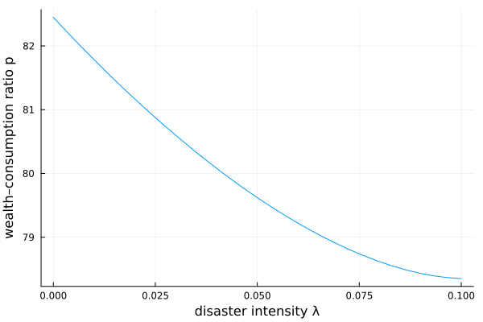

Wachter (2013): time-varying rare-disaster risk
Wachter asks whether a time-varying probability of rare consumption disasters can explain the high mean and volatility of the equity premium. Consumption follows a jump–diffusion: most of the time it grows smoothly, but at Poisson rate $\lambda_t$ a disaster strikes and lowers consumption by a random factor $e^{Z}$ (with $Z<0$). The single state is the disaster intensity $\lambda_t$, which mean-reverts as a square-root (CIR) process:
\[d\lambda_t = \kappa_\lambda(\bar\lambda - \lambda_t)\,dt + \nu_\lambda\sqrt{\lambda_t}\,dB_t.\]
With Epstein–Zin preferences the unknown is the wealth–consumption ratio $p(\lambda)$. Because disaster risk moves over time, so do risk premia and valuations — even though realized consumption is smooth outside disasters.
The model
using EconPDEs, Distributions, Plots
Base.@kwdef struct WachterModel{T<: Distribution}
# consumption process parameters
μ::Float64 = 0.025
σ::Float64 = 0.02
# disaster process parameters
λbar::Float64 = 0.0355
κλ::Float64 = 0.08
νλ::Float64 = 0.067
ZDistribution::T = Normal(-0.4, 0.25) # from Ian Martin higher order cumulants paper
# utility parameters
ρ::Float64 = 0.012
γ::Float64 = 3.0
ψ::Float64 = 1.1
ϕ::Float64 = 2.6
end
function (m::WachterModel)(state::NamedTuple, u::NamedTuple)
(; μ, σ, λbar, κλ, νλ, ZDistribution, ρ, γ, ψ, ϕ) = m
(; λ) = state
(; p, pλ_up, pλ_down, pλλ) = u
# drift and volatility of λ and p
μλ = κλ * (λbar - λ)
σλ = νλ * sqrt(λ)
# upwind on the sign of the drift of λ
pλ = (μλ >= 0) ? pλ_up : pλ_down
μp = pλ / p * μλ + 0.5 * pλλ / p * σλ^2
σp_Zλ = pλ / p * σλ
# market prices of risk
κ_Zc = γ * σ
κ_Zλ = (γ * ψ - 1) / (ψ - 1) * σp_Zλ
η = λ * (mgf(ZDistribution, 1) - 1 + mgf(ZDistribution, -γ) - 1 - (mgf(ZDistribution, 1 - γ) - 1))
# interest rate
r = ρ + μ / ψ - (1 + 1 / ψ) / 2 * γ * σ^2 - λ * (mgf(ZDistribution, -γ) - 1) + (1 / ψ - γ) / (1 - γ) * λ * (mgf(ZDistribution, 1 - γ) - 1) - (γ * ψ - 1) / (2 * (ψ - 1)) * σp_Zλ^2
# market pricing of the consumption claim
pt = - p * (1 / p + μ + μp + λ * (mgf(ZDistribution, 1) - 1) - r - κ_Zc * σ - κ_Zλ * σp_Zλ - η)
return (; pt)
endSolving it
The state $\lambda$ ranges over intensities from zero up to well above its long-run mean $\bar\lambda$. The $\sqrt\lambda$ diffusion vanishes at $\lambda = 0$, a degenerate boundary where no condition is imposed.
function initialize_stategrid(m::WachterModel; λn = 30)
(; λ = range(0.0, 0.1, length = λn))
end
function initialize_y(m::WachterModel, stategrid)
λn = length(stategrid[:λ])
(; p = ones(λn))
end
m = WachterModel()
stategrid = initialize_stategrid(m)
yend = initialize_y(m, stategrid)
result = pdesolve(m, stategrid, yend)Residual_norm: 9.794134021967204e-12
Zero: OrderedDict(:p => [82.44795623071037, 82.21300105503197, 81.9838393713212, 81.76045721314607, 81.54285187909746, 81.33103217310884, 81.12501875502103, 80.92484461013547, 80.73055564938043, 80.54221145489228 … 78.91330057917668, 78.81044636285665, 78.71635725178353, 78.63148707984102, 78.55635847933124, 78.49157418427102, 78.43783112444183, 78.39593807481062, 78.3668379036528, 78.35163585405256])
The solution
The wealth–consumption ratio falls steeply as the disaster intensity $\lambda$ rises: when a disaster is more likely, the representative agent discounts the consumption claim more heavily and valuations drop. Because $\lambda$ is persistent and itself volatile, this single channel generates large, time-varying risk premia and stock-market volatility out of an otherwise smooth consumption process — Wachter's central result.
λs = stategrid[:λ]
plot(λs, result.zero[:p]; xlabel = "disaster intensity λ", ylabel = "wealth–consumption ratio p", legend = false)
This page was generated using Literate.jl.